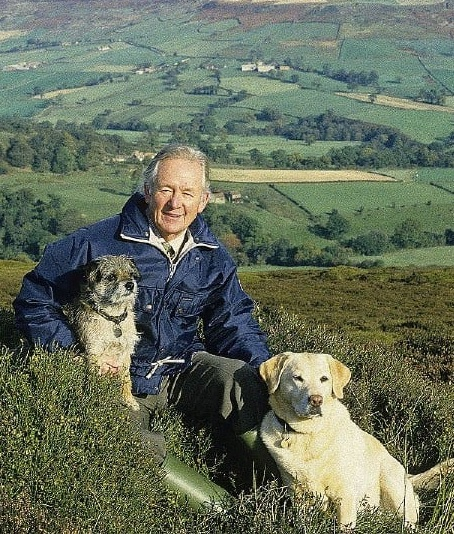
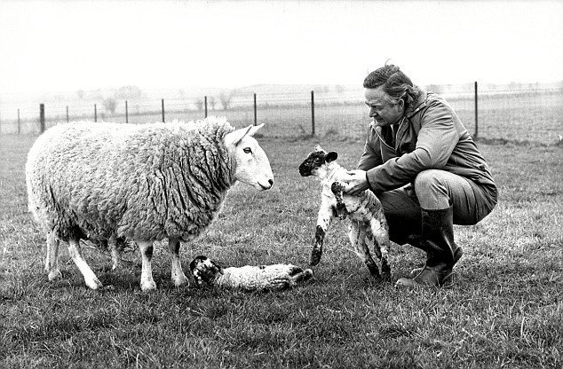

James Herriot was the pen name of James Alfred Wight, a veterinarian who practiced in northern England. He began writing about his experiences with animals at the age of fifty, becoming one of Britain's most successful authors. Gentle, humorous, and heartwarming, Herriot's books, such as his first best-seller All Creatures Great and Small, include reminiscences about his life and career: relationships with family and colleagues, his animal patients, the farmers who owned them, and the Yorkshire countryside.
An Idyllic Childhood
James Alfred Wight was born on October 3, 1916, in Sunderland, England, to bar and movie-house piano player James and singer Hannah Wight. Three weeks after his birth, the family moved to Glasgow, Scotland. He attended schools in the nearby town of Hill-head, where he went to Yoker Primary School and then Hillhead High School. Herriot described his childhood as “idyllic,” explaining, “I spent much of my childhood and adolescence walking along with my dog, camping and climbing among the highlands of Scotland so that at an early age three things were implanted in my character: a love of animals, reading, and the countryside.”
After reading a magazine article describing a veterinarian's life, Herriot decided at the age of thirteen that he wanted to be a vet. After receiving his degree from Glasgow Veterinary School, Herriot started his first job as an assistant
vet in North Yorkshire, England, in the practice of Dr. John Sinclair. “I hadn’t thought it possible that I could spend all my days in a high, clean-blown land where the scent of grass or trees was never far away…[and] find the freshness of growing things hidden somewhere in the cold clasp of the wind….My work consisted now of driving from farm to farm across the roof of England with a growing conviction that I was a privileged person.” Thirty years later, the work and the countryside would become the focal points of his books.
A Wife's Challenge
“The life of a country vet was dirty, uncomfortable, sometimes dangerous,” Herriot wrote in All Creatures Great and Small. “It was terribly hard work, and I loved it. I felt vaguely that I ought to write about it and every day for twenty-five years I told my wife of something funny that had happened and said I was keeping it for the book,” Herriot told Scotsman journalist William Foster. “She usually said ‘Yes, dear’ to humour me but one day, when I was fifty, she said: ‘Who are you kidding? Vets of fifty don't write first books.’” Her words were the motivation he needed. “I stormed out and bought some paper and taught myself to type.”
Writing proved difficult at first. “I started to put it all down and the story didn’t work,” he recalled to Foster. “All I managed to pick out on the machine was a very amateur school essay. So I spent a year or two learning my craft, as real writers say.” His writing process included his adopting a pseudonym. “It's against the ethics of the veterinary profession to advertise and when I first started writing my books, I was afraid some of my peers might think it unprofessional of me to write under my own name,” Herriot explained to Arturo F. Gonzalez in Saturday Review. “So, I was sitting in front of the TV tapping out one of my stories and there was this fellow James Herriot playing such a good game of soccer for Birmingham that I just took his name.”
Bright and Beautiful Success

After four years of improving his writing skills and enduring publishers’ rejections, Herriot saw the 1970 publication of If Only They Could Talk in England. By itself the book sold only twelve hundred copies, but this number did not accurately predict the career about to unfold. “I thought it would stop at one book and nobody would ever discover the identity of the obscure veterinary surgeon who had scribbled his experiences in snatched moments of spare time,” Herriot wrote in James Herriot's Yorkshire. His next book, however, eliminated the possibility of his fading into obscurity.
It Shouldn't Happen to a Vet was published in the United States together with If Only They Could Talk under the title All Creatures Great and Small. The book was an instant best seller. It proved to be his most popular book and launched a series that included All Things Bright and Beautiful, All Things Wise and Wonderful, The Lord God Made Them All, and Every Living Thing. Every volume was met with great enthusiasm.
The Last “Big” Book
In 1984, Herriot expanded his writing to include children's stories with Moses the Kitten, the first of several cat stories written for young readers. Dogs have received equal billing in books including The Market Square Dog (1991) and James Herriot's Dog Stories (1995), in which many of the pieces were adapted from his previous works.
Although Herriot had told Foster and others that The Lord God Made Them All would be his last “big” book, he relented, and Every Living Thing was published in 1992, on the twentieth anniversary of the release of All Creatures Great and Small. The book was a best seller. Among the reviews expressing delight, Cathy Collison of the Detroit Free Press remarked that the book “offers more of Herriot's personal life,” and concluded that it “is enough to keep the reader hoping Herriot, now retired from surgery, will turn his hand to one more volume.” Unfortunately for his admirers, Every Living Thing was to be Herriot's last original book.
In the winter of 1995 Herriot died of prostate cancer at his home in England, leaving his son, James, also a veterinarian, and his daughter, Rosemary, a doctor. Before he died, Herriot insisted that he had everything he wanted. “If you get married and have kids, that's the main thing, isn't it?” he asked Claudia Glenn Dowling in a Life magazine profile. “And I've lived in this beautiful district, having the great pleasure of being associated with animals. Oh aye, it's been a marvelous life.”
More about James Herriot Biography...